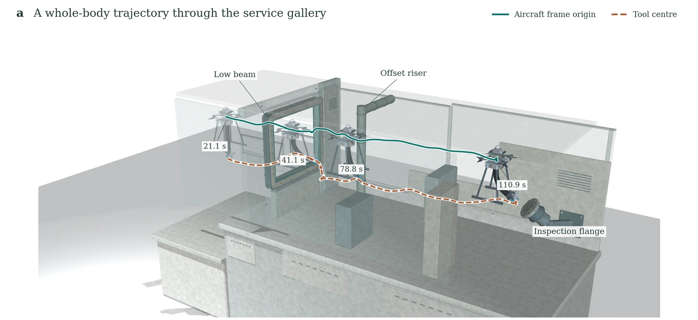
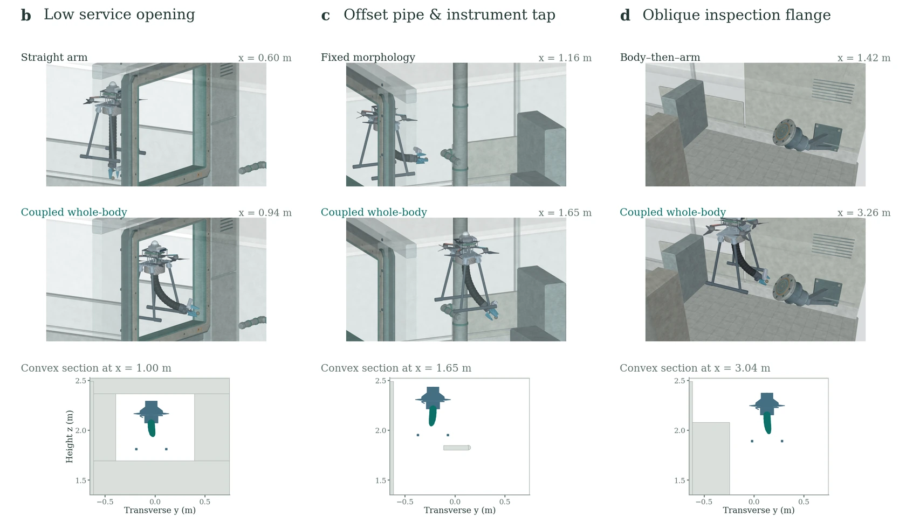
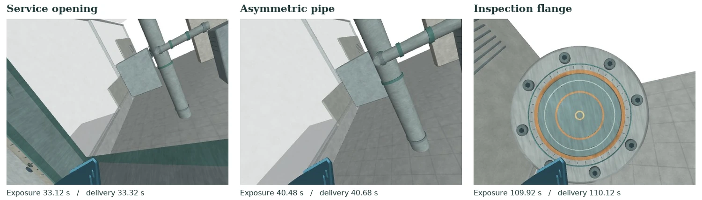
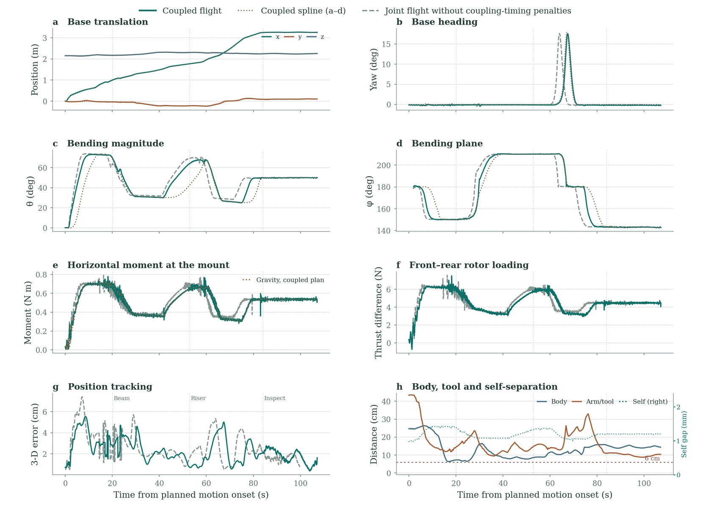

M1 · 六维全身联合规划 / 2026-11-21 12:43（北京时间）
跨越低梁与侧管，斜向检视法兰
十五趟独立闭环。完整法在三个配对种子上均降低变形期机身跟踪峰值。按六厘米净空和持续检视验收，完整法通过 1/3，时序消融通过 2/3。
大附件单独提供：完整联合飞行的连续双视角、高清主图与矢量文件。
模型与场景

01穿越检修舱的四个姿态
两条流线分别给出机身与夹爪的物理轨迹。


02同机位近景与三个实测横截面
剖切真实连杆几何。每一列使用同一相机、比例和剖切平面。


03腕部相机依次看到了什么
三张原始曝光依次显示低梁检修窗、非对称支管和螺栓法兰。每帧下方标出曝光及交付时刻。

曲线与机制图

01六维运动与机臂反作用
同一配对种子的机身位置、偏航、双弯曲变量、臂根力矩、前后桨推力差及三维净空。

视频回放
01五方法配对飞行
1920 × 1080；每章在同一个释放时钟上比较两趟飞行，同时显示注册外部视角、原生腕部曝光和交付时刻。
02完整联合飞行的连续双视角
从首帧腕部曝光持续到最后一帧，2 倍速。同步显示弯曲幅值、方位角及终端检视误差。
论文与报告
打开两页审阅
第一页阅读三关几何和腕部视野，第二页比较耦合时序与成绩表。
数据及运行记录
十五趟逐趟数据
每行一个预登记方法与种子，含求解时间、任务验收和实际动态响应。
配对试验登记
场景摘要、源提交、固定种子、感知锁定和统一评分阈值。
原始飞行与传感数据指纹
每趟 ULog、ROS bag、物理与控制日志，以及全部 RGB、深度曝光的指纹。
三次关键曝光
含原始腕部图像的 SHA-256、曝光与交付时刻、目标在图像中的位置。
视频与原生曝光核验
从高清成片抽取腕部区域，与原生相机记录核对。
横向位置的反事实复算
同一飞行姿态仅恢复机身参考线的横向位置，按 5 Hz 在侧管与回旋区重算三维净空。
十五趟结束原因与守门记录
按外障、自碰、接触、末端和深度逐项验收，并列出各次守门的实际物理间隙。
按管廊纵向位置配对的动力学读数
逐种子对齐飞行位置，比较局部跟踪、推力、弯曲方位与横向位移。
逐趟日志包索引
十五个独立压缩包的名称、字节数和 SHA-256 指纹。
高清主图与矢量文件
三组图，各含 PNG、PDF 和 SVG。